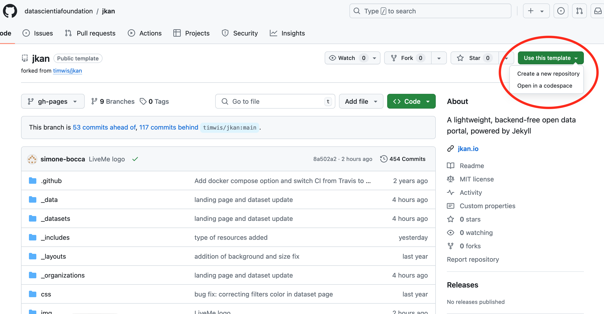
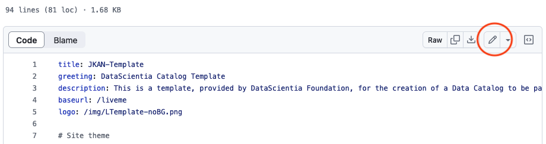
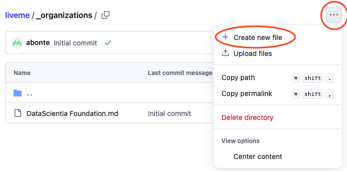
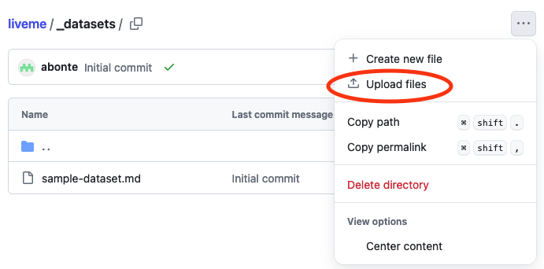

LiveMe tutorial
This tutorial will guide you through the deployment of the LiveMe catalog and the upload of the metadata of the datasets generated during the course. The steps are run through the Github website, but if you know git commands, you can perform them through the command line.
1 Introduction to LiveMe
The LiveMe data catalog is a light-weight static website based on jkan.io. The website runs on GitHub Pages. JKAN is a tool for making open data websites. In this couse, only the metada will be uploaded. The actual data are kept on the student device. JKAN is backend-free and the business logic, maintained in the reference Github repository, is developed in node js and is executed directly from the repository as Github pages. Once the reference github repository is set up, the catalog can go online immediately. It is accessible through the link provided by its github webpage. The development and maintenance of the catalog can be done completely on the repository, all the modifications performed there will be directly available online on the webpage. Being based on Github, the JKAN catalog can be updated only by users who have access to the relative repository.
2 Getting started
Create a new LiveMe catalog by creating it from the template.
Provide a Repository Name (in the rest of this tutorial we assume the name is
liveme), and then Create Repository.
Once your repository is created, update the website configuration file with your information.
- Go on your repository
https://github.com/<GITHUB_USERNAME>/liveme - Modify the
_config.ymlfile by clicking on it and onEdit this filebutton

- Change the value of the following properties like in the example below:
title: LiveMe greeting: LiveMe Catalog of <YOUR_NAME> description: Personal data catalog of <YOUR_NAME>. baseurl: /liveme logo: /img/LiveMe.png- Click the Commit changes button to save the configuration (it might take few seconds before the changes are published on the website).
- Go on your repository
Once the configuration is updated, you can look how the website looks like at the following URL
https://<GITHUB_USERNAME>.github.io/<REPOSITORY_NAME>/, where<GITHUB_USERNAME>is replaced with your Github username and<REPOSITORY_NAME>is the name of the repository you defined in the previous step (e.g.,https://abonte.github.io/liveme/).
3 Repository structure
In this section, we describe the structure of the JKAN template repository that Datascientia provides to set up a new catalog. Below we describe the most important elements for the course.
_data: this directory contain the yml configuration files used to define the metadata of the resources handled by the catalog (within the “schemas” directory), as well as the categories that can be used to categorize the resources in the catalogs, and the custom services which can accessed to the catalog._datasets: this directory stores the markdown file describing (following a precise metadata schema) each dataset uploaded in the catalog._organizations: similar to the_datasetsdirectory, this one contains the markdown files defining the organization that have uploaded (the owner usually) datasets in the catalog._config.yml: this is the main config file of the JAKN catalog.datasets.json: this file defines the structure of each dataset that can be searched within the catalog. This file is used for the search functionality mostly, this means that, in order to be searchable, the datasets in the catalog need to respect the structure in this file, which can be updated in order to add new search criteria.
Other folders in the repository:
_includes: this directory contains the website pages (html files) that are shown in the catalog web page.css: it contains the catalog main.css style file.img: it contains the images used in the catalog website.scripts: this directory contains the business logic of the JKAN catalog. More in detail, in the “src” subdirectory we can find the javascript code divided in the different files, containing different specific functions. While in the “dist” subdirectory we can find the bundle.js file that is the file created after building the code in the src subdirectory. The bundle.js file is the only file that is actually executed in order to apply the JKAN business logic to the catalog. This means that all the modification performed in the source code (src subdirectory) needs to be reported in the bundle.js file too, this happens automatically running the build process (see the next section for the instruction about how to make a new build locally).Index.html: this is the main html file of the catalog webpage. The visualization of the catalog website, as well as its navigation, starts from this file.
4 Add a new organization (you)
The organization is the individual or the entity that have uploaded (the owner usually) datasets in the catalog. In LiveMe, the owner uploading the data is the owner of the personal catalog.
To add yourself as an organization in the catalog follow these steps.
Create a new file named
<YOUR_NAME>.mdinside the_organizationfolder in the repository.
Paste the following text and change with your information.
--- schema: default 1title: <YOUR_NAME> description: <YOUR_NAME> is a student of the Studies on Human Behavior course of the University of Trento. ---- 1
- Make sure that the value maches the filename
After few seconds, the created organization is visible on the website. All dataset metadata that you will upload will belog to this organization.
5 Add a new dataset metadata
Do not upload the actual data (sensor data or answer to the questions) in the catalog repository. This data must be kept on your device and the provided storage.
To a new dataset, you need to create a new markdown file containing the metadata that describe the dataset. The metadata follows a defined schema (see _data/schemas/default.yml).
Create a new file named
<DATASET_NAME>.mdinside the_datasetsfolder in the repository (similarly to Section 4).Paste the following text and change with your information.
--- schema: default title: First dataset 1organization: <YOUR_NAME> notes: This is my first dataset on my new JKAN catalog resources: - name: Air Monitoring Stations CSV url: >- http://data.phl.opendata.arcgis.com/datasets/1839b35258604422b0b520cbb668df0d_0.csv format: csv license: 'https://www.nationalarchives.gov.uk/doc/open-government-licence/version/3/' category: - Personal data type: - Documentation maintainer: Tim Wisniewski maintainer_email: tim@timwis.com tags: parquet ---- 1
- Make sure that the organization name matches the name you defined in Section 4.
Indentation matter, be sure respect the structure!
- After few seconds, the dataset is visible on the website.
The data processing pipeline on your personal data automatically generate these files in the todo FOLDER. You just need to add them in the _datasets folder.
To peform a bulk upload, select Upload files inside the _datasets folder and follow the instructions.

6 Add your LiveMe catalog link to your community profile
TODO